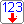
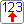
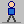

Die Bauteilleiste befindet sich links auf dem Panel. Dort wählen Sie ein Bauteil und setzen es anschließend mit einem Klick auf das Panel.
Die Bauteile sind in drei Gruppen eingeteilt, von links nach rechts in einer Schaltung: Eingang → Verarbeitung → Ausgang.
| Schaltfläche | Name | Was macht sie? |
|---|---|---|
| Verbindung | Schaltet den Drahtmodus ein oder aus. Siehe Verbindungen. |
| Schaltfläche | Name | Was ist das? |
|---|---|---|
 | Taster | Gibt ein Signal, solange Sie ihn gedrückt halten. |
 | Schalter | Bleibt ein oder aus, bis Sie erneut klicken. |
 | DIP-Schalter | Eine Zahl von 0 bis 15 einstellen und mit einem Knopf senden. |
 | Impulsgeber | Gibt regelmäßig einen Impuls. |
 | Lichtsensor | Reagiert auf Licht. |
 | Wärmesensor | Reagiert auf Wärme. |
| Schaltfläche | Name | Was ist das? |
|---|---|---|
 | UND-Gatter | Ausgang ein, wenn alle Eingänge ein sind. |
 | ODER-Gatter | Ausgang ein, wenn mindestens ein Eingang ein ist. |
 | NICHT-Gatter | Kehrt das Signal um. |
 | Zählerbaustein | Zählt Impulse und gibt den Stand binär weiter. |
 | Speicherbaustein | Gibt den Inhalt eines gewählten Speicherplatzes weiter. |
| Schaltfläche | Name | Was ist das? |
|---|---|---|
 | Lampe | Leuchtet, wenn der Eingang ein ist. |
 | Relais | Zeigt, wie ein Kontakt umschaltet, wenn die Spule erregt wird. |
 | Summer | Ertönt, wenn der Eingang ein ist. |
| Motor | Dreht links (Eingang L) oder rechts (Eingang R). | |
 | 7-Segment-Anzeige | Zeigt eine Ziffer oder einen Buchstaben. |
 | Voltmeter | Zeigt die Spannung, zum Beispiel 3,3 V. |
 | Person | Geht nach links (Eingang L) oder rechts (Eingang R); die Endschalter S1 und S2 melden, wo sie steht. |
| Schaltfläche | Name | Was ist das? |
|---|---|---|
 | + Schiene | Versorgungsschiene für die Eingänge, mit einstellbarer Spannung. |
 | − Schiene | Masseschiene (0 V) für die Ausgänge. |